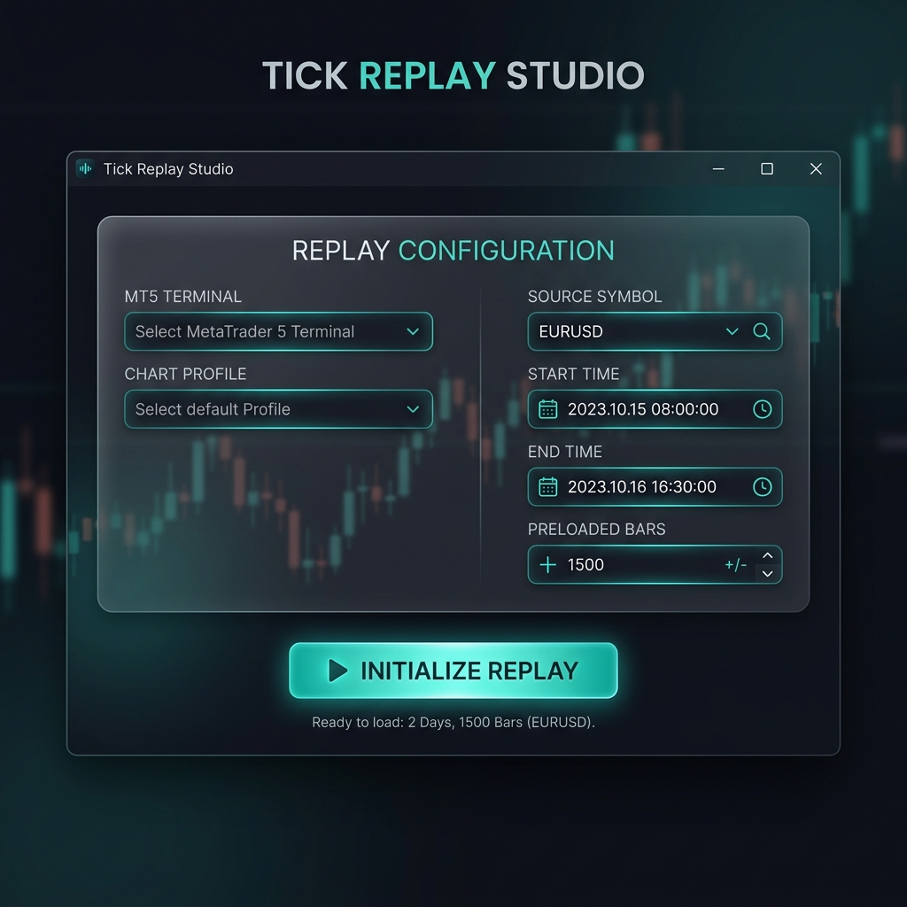
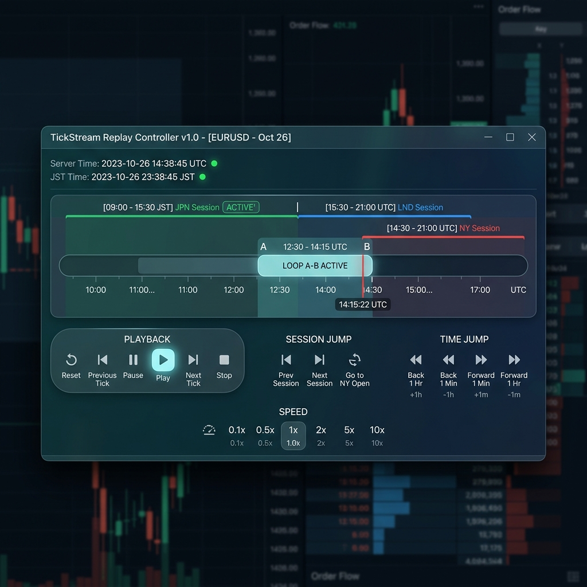
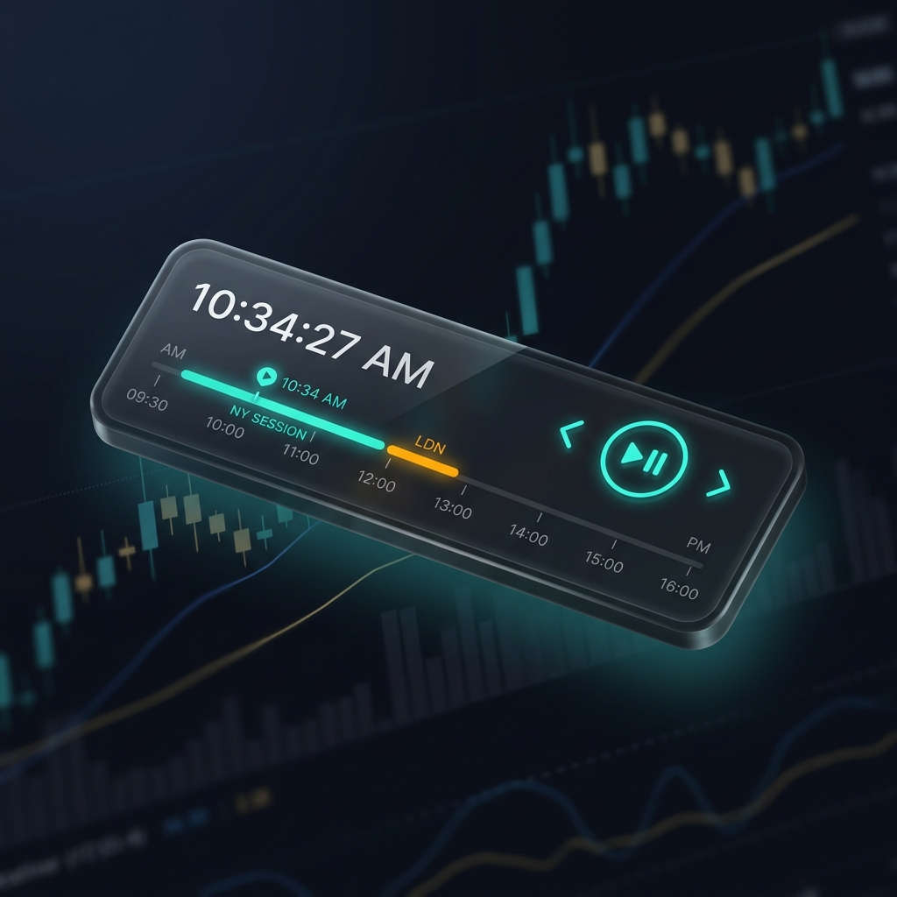

MT5 ティックリプレイ システムとは
過去の相場データ（1ミリ秒単位のティック）を動画プレイヤーのように再生・巻き戻ししながら、裁量トレードの練習やカスタムインジケーターのバックテストをリアルタイムに行うための高機能デスクトップ操作パネルです。
コア・アドバンテージ
ミリ秒・ティック単位の超高精度再現
MT5上のローソク足は、蓄積された実際のティックデータに基づいて下位時間軸から順番に生成されます。1ミリ秒の遅延もなく、極めて精緻なプライスアクションを再現可能です。
ちらつきのない瞬間巻き戻し (シーク)
タイムライン上のドラッグ操作で、過去の任意のポイントに瞬間移動できます。未来のローソク足は瞬時に消去され、MT5側の描画も綺麗に同期・再計算されます。
A-Bループで特定の局面を集中検証
チャートパターンの突破や重要な経済指標時の値動きなど、見直したいポイントに「開始点A」「終了点B」をセットすれば、その区間内を何回でも自動リピート再生して確認できます。
2つの再生速度調整アプローチ
時間の流れをN倍にする「時間比率モード」（1倍〜1万倍速）と、一瞬の描写ティック数を指定する「ティック枚数モード」（1周期1〜1000枚）を使い分けられます。
主要市場セッションの可視化とジャンプ
タイムライン背景には東京(TYO)・ロンドン(LDN)・ニューヨーク(NY)の稼働帯が自動着色されます。また、セッション開始地点へワンクリックでジャンプできます。
操作を邪魔しない極小リモコンモード
「Remote」ボタンを押すと、UIが細長いミニマルバーに切り替わります。最前面固定機能（Pin）と併用することで、MT5のチャートスペースを広く使った検証が可能です。
動くUIサンドボックス
本物に近い動作を体感できるHTMLベースのインタラクティブなUIプレビューです。ボタンのクリック、モード変更、再生時のタイムラインの進行などをご確認ください。
シミュレーターの操作ガイド
このシミュレーターは実際のTauriアプリのUI配置・機能デザインを忠実に模しています。以下のインタラクションをお試しください：
- 接続状態の遷移: 画面は最初は初期設定画面です。「Initialize Replay」 ボタンを押すと、再生コントロール用のコントローラー画面に切り替わります。
- 再生・一時停止 (PLAY / PAUSE): コントローラー画面のPLAYボタンを押すと、仮想時刻（Server Time/JST Time）とタイムラインが自動で進み始めます。もう一度押すと一時停止します。
- タイムラインクリック: タイムラインのバー上をクリックすることで、任意の再生位置（進捗率）にシークできます。
- A-Bループの設定: 再生中に 「SET A」 を押すとその位置にループ開始点を、「SET B」 を押すと終了点を設定します。設定完了後はその区間を繰り返し再生します。「CLEAR LOOP」 で解除できます。
- リモコン切り替え (Remote): 下部の「Remote」ボタンを押すと、超極細のミニマル配置（リモコンモード）に変化します。
- Pin / Hotkeysトグル: 下部のトグルボタンを押すと、状態が切り替わります。
- Terminate（終了）: 終了ボタンを押すと初期設定画面に戻ります。
Tick Replay Controller
Setup Replay Environment
MT5チャートに TickReplayControllerEA を適用し、
チャート上の「Start Replay Sync」ボタンをクリックしてください。
デザインモックアップ
デスクトップアプリケーションとしての視覚的レイアウトとプレミアムな質感を定義した画像モックアップです。

MT5の接続先や複製する対象の通貨ペア、検証期間などを指定する画面です。PC上にインストールされたMT5ターミナルは自動でスキャンされ、簡単に選択可能です。プロファイルやヒント表示など、スムーズに検証を開始できる設計になっています。

検証中の状態をコントロールするメイン画面です。東京、ロンドン、ニューヨーク各市場の稼働時間が色分けされたタイムライン、A-Bループ範囲のマーキング、詳細な速度変更パネル、ワンタッチで主要時間へ跳ぶセッションジャンプボタンなどが人間工学に基づきコンパクトに配置されています。

「Remote」を押すことで極めてスリムな状態に変形します。幅が細くなり、MT5のチャートエリアを遮ることなく常に最前面に配置（Pin機能）できます。時間の経過確認や、再生・ステップ送りなどの必須操作のみを素早く行えます。
キー操作とショートカット仕様
本システムには、リモコンアプリ側がアクティブな際のキー操作に加え、MT5チャートを操作している際にも機能する「グローバルショートカット」が搭載されています。これにより、リモコン画面とMT5画面を交互にクリックし直す手間がありません。
ショートカットキー一覧
| キーボード操作 | 機能動作 | 補足条件 |
|---|---|---|
| Space | 再生 / 一時停止 (PLAY / PAUSE) | 共通で動作します |
| → (右矢印) | 1ティック進む (STEP FWD) | 一時停止中のみ動作します |
| ← (左矢印) | 1ティック戻る (STEP REW) | 一時停止中のみ動作します |
| Shift + → | 次の市場セッション開始地点へジャンプ | 直近の東京・ロンドン・NYへ移動 |
| Shift + ← | 前の市場セッション開始地点へジャンプ | |
| Ctrl + → | +1時間スキップ | |
| Ctrl + ← | -1時間巻き戻し | |
| ] | 再生速度の粗調整（アップ） | プリセット値（1倍, 5倍, 10倍, 60倍...）を移動 |
| [ | 再生速度の粗調整（ダウン） | |
| = | 再生速度の微調整（アップ） | 現在の速度を少しずつ細かく変更 |
| - | 再生速度の微調整（ダウン） | |
| A | A-Bループの開始点 A を設定 | |
| B | A-Bループの終了点 B を設定 | セット完了後、自動的に A に戻ってループ開始 |
| C | A-Bループ設定をクリア | 通常再生状態に戻ります |
| R | リプレイのリセット | 検証開始時点（進捗0%）に戻ります |
注意: グローバルショートカットは「Hotkeys」トグルがONの時のみ有効になります。MT5や他のアプリでテキスト入力を行う際は、誤入力を防ぐため「Hotkeys」トグルを一時的にOFFにしてください。